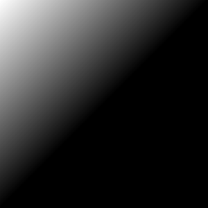
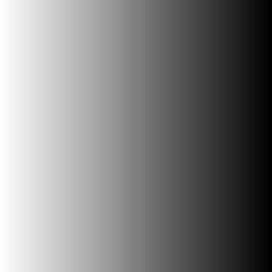
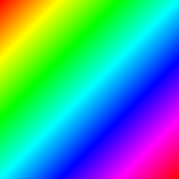
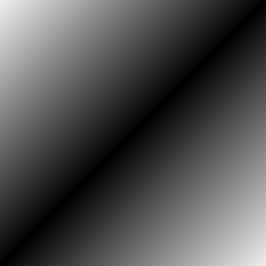
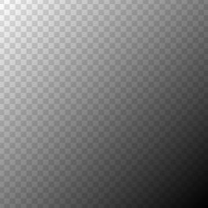
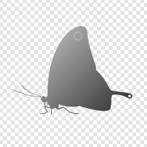
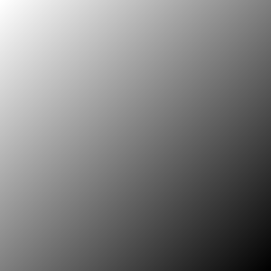
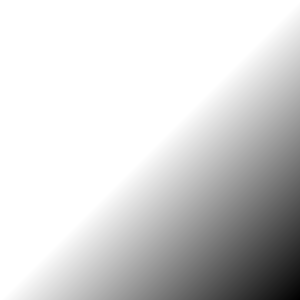

LinearGradient
Draws a linear gradient. More...
Inherits Item
This type was introduced in QtGraphicalEffects 1.0.
Properties
Detailed Description
A gradient is defined by two or more colors, which are blended seamlessly. The colors start from the given start point and end to the given end point.
| Effect applied |
|---|
Example
The following example shows how to apply the effect.
import QtQuick 2.0 import QtGraphicalEffects 1.0 Item { width: 300 height: 300 LinearGradient { anchors.fill: parent start: Qt.point(0, 0) end: Qt.point(0, 300) gradient: Gradient { GradientStop { position: 0.0; color: "white" } GradientStop { position: 1.0; color: "black" } } } }
Property Documentation
cached : bool |
This property allows the effect output pixels to be cached in order to improve the rendering performance.
Every time the source or effect properties are changed, the pixels in the cache must be updated. Memory consumption is increased, because an extra buffer of memory is required for storing the effect output.
It is recommended to disable the cache when the source or the effect properties are animated.
By default, the property is set to false.
end : variant |
This property defines the ending point where the color at gradient position of 1.0 is rendered. Colors at smaller position values are rendered linearly towards the start point. The point is given in pixels and the default value is Qt.point(0, height). Setting the default values for the start and end results in a full height linear gradient on the y-axis.
| Output examples with different end values | ||
|---|---|---|
|  |  |
| end: Qt.point(300, 300) | end: Qt.point(150, 150) | end: Qt.point(300, 0) |
| start: Qt.point(0, 0) | start: Qt.point(0, 0) | start: Qt.point(0, 0) |

gradient : Gradient |
A gradient is defined by two or more colors, which are blended seamlessly. The colors are specified as a set of GradientStop child items, each of which defines a position on the gradient from 0.0 to 1.0 and a color. The position of each GradientStop is defined by the position property, and the color is definded by the color property.
| Output examples with different gradient values | ||
|---|---|---|
 |  |  |
gradient:Gradient {
GradientStop { position: 0.000
color: Qt.rgba(1, 0, 0, 1) }
GradientStop { position: 0.167;
color: Qt.rgba(1, 1, 0, 1) }
GradientStop { position: 0.333;
color: Qt.rgba(0, 1, 0, 1) }
GradientStop { position: 0.500;
color: Qt.rgba(0, 1, 1, 1) }
GradientStop { position: 0.667;
color: Qt.rgba(0, 0, 1, 1) }
GradientStop { position: 0.833;
color: Qt.rgba(1, 0, 1, 1) }
GradientStop { position: 1.000;
color: Qt.rgba(1, 0, 0, 1) }
}
| gradient:Gradient {
GradientStop { position: 0.0
color: "#F0F0F0"
}
GradientStop { position: 0.5
color: "#000000"
}
GradientStop { position: 1.0
color: "#F0F0F0"
}
}
| gradient:Gradient {
GradientStop { position: 0.0
color: "#00000000"
}
GradientStop { position: 1.0
color: "#FF000000"
}
}
|
| start: Qt.point(0, 0) | start: Qt.point(0, 0) | start: Qt.point(0, 0) |
| end: Qt.point(300, 300) | end: Qt.point(300, 300) | end: Qt.point(300, 300) |
source : variant |
This property defines the item that is going to be filled with gradient. Source item gets rendered into an intermediate pixel buffer and the alpha values from the result are used to determine the gradient's pixels visibility in the display. The default value for source is undefined and in that case whole effect area is filled with gradient.
| Output examples with different source values | ||
|---|---|---|
|  | |
| source: undefined | source: Image { source: images/butterfly.png } | |
| start: Qt.point(0, 0) | start: Qt.point(0, 0) | |
| end: Qt.point(300, 300) | end: Qt.point(300, 300) |

start : variant |
This property defines the starting point where the color at gradient position of 0.0 is rendered. Colors at larger position values are rendered linearly towards the end point. The point is given in pixels and the default value is Qt.point(0, 0). Setting the default values for the start and end results in a full height linear gradient on the y-axis.
| Output examples with different start values | ||
|---|---|---|
 |  | |
| start: QPoint(0, 0) | start: QPoint(150, 150) | start: QPoint(300, 0) |
| end: QPoint(300, 300) | end: QPoint(300, 300) | end: QPoint(300, 300) |